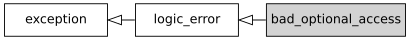

std::experimental::bad_optional_access
来自cppreference.com
| 在标头 <experimental/optional> 定义
|
||
| |
(库基础 TS) | |
定义由 std::experimental::optional::value 在访问并不含有值的 optional 对象时所抛出对象的类型。

继承图
成员函数
(构造函数) |
构造新的 bad_optional_access 对象 (公开成员函数) |
operator= |
替换 bad_optional_access 对象 (公开成员函数) |
what |
返回解释字符串 (公开成员函数) |
std::experimental::bad_optional_access::bad_optional_access
| |
(1) | (库基础 TS) |
| |
(2) | (库基础 TS) |
构造新的拥有实现定义的空终止字节字符串的 bad_optional_access 对象，字符串能通过 what() 访问。
1) 默认构造函数。
2) 复制构造函数。如果
*this 与 other 均拥有动态类型 std::experimental::bad_optional_access，那么 std::strcmp(what(), other.what()) == 0。参数
| other | - | 要复制的另一异常对象 |
std::experimental::bad_optional_access::operator=
| |
(库基础 TS) | |
以 other 的内容赋值。如果 *this 与 other 均拥有动态类型 std::experimental::bad_optional_access，那么赋值后 std::strcmp(what(), other.what()) == 0。
参数
| other | - | 用来赋值的另一异常对象 |
返回值
*this
std::experimental::bad_optional_access::what
| (库基础 TS) | ||
返回解释字符串。
返回值
指向有由实现定义的解释信息的空终止字符串的指针。该字符串适合转换并显示为 std::wstring。保证该指针至少直到获得它来源的异常对象被销毁，或在该异常对象上调用非 const 成员函数（例如复制赋值运算符）为止一直有效。
|
返回的字符串在常量求值过程中按普通字面量编码。 |
(C++26 起) |
注解
允许但不要求实现覆写 what()。
继承自 std::logic_error
继承自 std::exception
成员函数
[虚] |
销毁该异常对象 ( std::exception 的虚公开成员函数) |
[虚] |
返回解释性字符串 ( std::exception 的虚公开成员函数) |